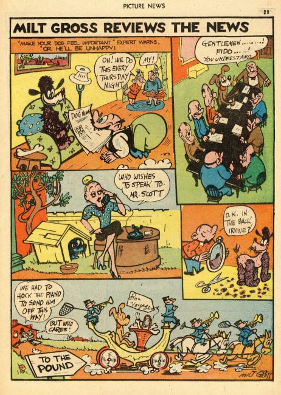
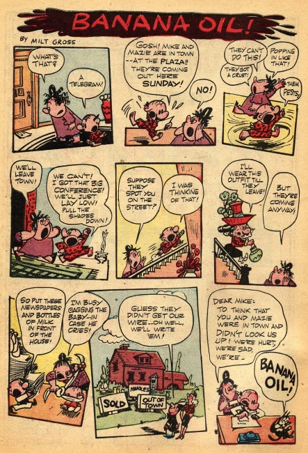
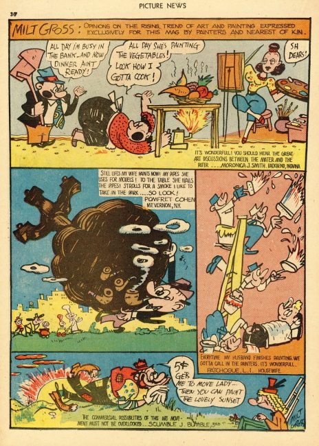
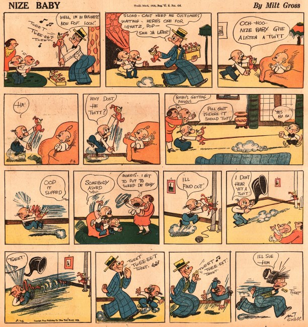
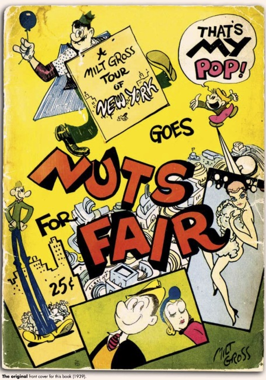
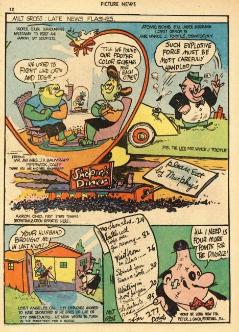
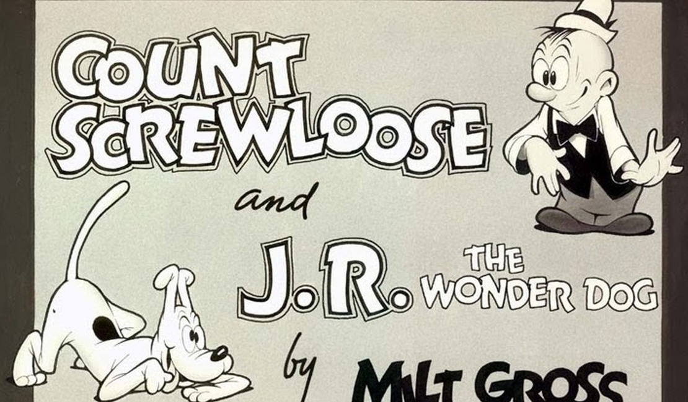

×






❮
❯
Milt Gross (1895 – 1953) was an American cartoonist and animator. His work is noted for its exaggerated cartoon style and Yiddish-inflected English dialogue. He originated the non-sequitur "Banana Oil!" as a phrase deflating pomposity and posing. His character Count Screwloose's admonition, "Iggy, keep an eye on me!", became a national catchphrase. The National Cartoonists Society fund to aid indigent cartoonists and their families for many years was known as the Milt Gross Fund. In 2005, it was absorbed by the Society's Foundation, which continues the charitable work of the Fund.
Gross made occasional animated films through the silent film era, including The Ups & Downs of Mr. Phool Phan (his first), Useless Hints by Fuller Prunes, Izzy Able the Detective and How My Vacation Spent Me. Most of these were for Bray Productions, the studio of John R. Bray. Other were for Universal. In 1939, he returned to animation with two MGM cartoons, Jitterbug Follies and Wanted: No Master, featuring Count Screwloose (voiced by Mel Blanc). According to Bill Littlejohn they were both extremely funny works. But Fred Quimby thought them to be too vulgar and had Gross fired.
Titles
Banana Oil! (1924) M.S. Publishing Co.
Nize Baby (1926) Grosset & Dunlap
Hiawatta witt No Odder Poems (1926) George H. Doran Co.
De Night in de Front from Chreesmas (1927) George H. Doran Co.
Dunt Esk!! (1927) Grosset & Dunlap
Famous Fimmales witt Odder Ewents from Heestory (1928) Doubleday, Doran & Co.
He Done Her Wrong (1930) Doubleday, Doran & Co.
What's This? (with Robert M. Low and Lou Wedemar) (1936) Simon and Schuster
Pasha the Persian by Margaret Linden, illustrated by Milt Gross (1936) Claude Kendall, Inc.
That's My Pop Goes Nuts for Fair (1939) The Bystander Press.
Dear Dollink (1945) G.P. Putnam's Sons
I Shoulda Ate the Eclair (1946) Ziff-Davis Publishing Co.
Milt Gross Funnies #1 (August 1947) American Comics Group
Milt Gross Funnies #2 (September 1947) American Comics Group
Hiawatta and De Night in de Front from Chreesmas (1950) Doubleday
The Smithsonian Collection of Newspaper Comics (1977) Bill Blackbeard, ed., Smithsonian Institution Press/Harry Abrams
He Done Her Wrong (Reprinted 2006) Fantagraphics
Art Out of Time: Unknown Comics Visionaries 1900–1969 (2006) Dan Nadel, ed., Abrams
Is Diss a System?: A Milt Gross Comic Reader (2009) Ari Kelman, ed., NYU Press
The Complete Milt Gross Comic Books and Life Story (2010) Craig Yoe, ed., IDW Publishing
Milt Gross’ New York: A Lost Graphic Novel (2015)